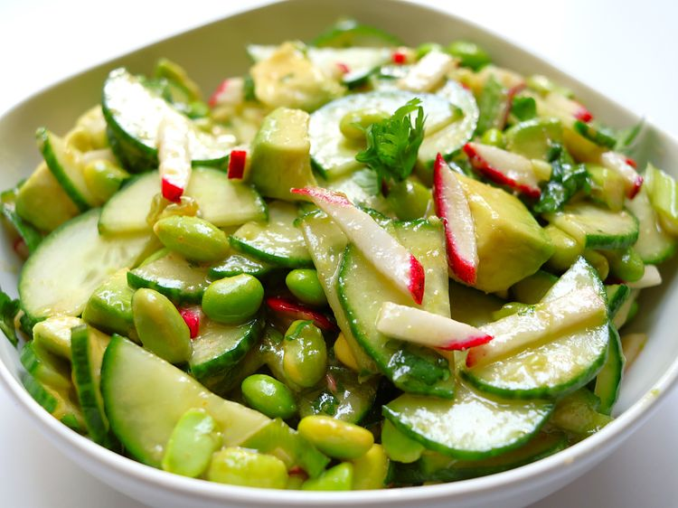

Fresh, crunchy, and full of flavor, this salad combines crisp cucumber, edamame, radishes, and creamy avocado with a sweet and tangy dressing. Ready in under 30 minutes, it’s an easy side dish or light lunch. I buy precut radish matchsticks to save time, but you can certainly cut your own.